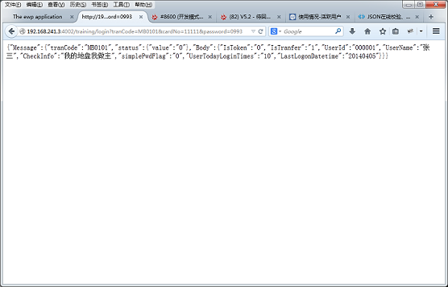
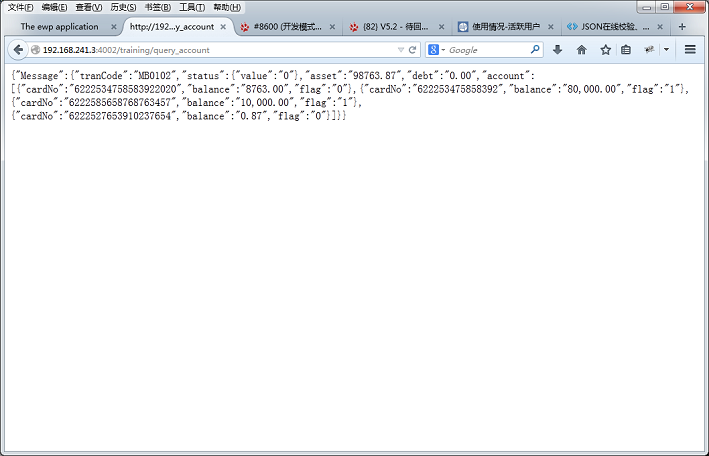
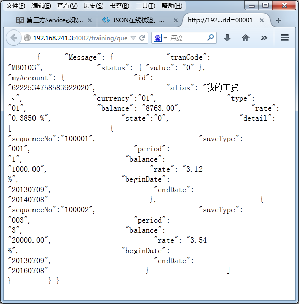

需要从第三方服务器获取数据，所以我们需要搭建一个服务用来作为第三方的服务器用于提供返回数据。 搭建一个新服务稍显麻烦，我们就使用先前创建的helloapp APP 作为服务器即此APP作为服务器提供数据的同时也获取数据实现业务逻辑。
一般在与第三方服务器商议接口时对于每一个请求都有一个唯一的业务标识，我们称为tranCode。此书中例子涉及到的接口大概有三个，我们先将此三个接口定义完成。
登录接口
| 接口方法： | http://网银APP服务器域名或IP:端口/sim/provide_data | ||
| HTTP请求方法： | Post | ||
| 业务接口名称： | 登录接口 | ||
| 描述： | 用户登录手机银行获取信息 | ||
| 接口需求方： | 手机银行 | ||
| 接口提供者： | 网银系统 | ||
| 输入参数 | |||
| 参数 | 参数名称 | 非空 | 备注 |
| tranCode | 交易码 | Y | 固定值：MB0101 |
| password | 密码 | Y | |
| cardNo | 账号 | Y | |
| cardFlag | 账号类型 | Y | 1:一卡通,2:信用卡,3:一网通 |
| 成功返回 | |||
| 返回内容说明 | 返回用户信息 | ||
| 返回XML结构 | |||
|
|||
| 失败返回 | |||
| 返回内容说明 | 返回XML文件，包含处理失败的代码和失败原因提示 | ||
| 失败返回XML结构 | |||
|
|||
账户查询接口
| 接口方法： | http://网银APP服务器域名或IP:端口/sim/provide_data | ||
| HTTP请求方法： | Post | ||
| 业务接口名称： | 账户查询接口 | ||
| 描述： | 查询用户在手机银行加挂的账户信息 | ||
| 接口需求方： | 手机银行 | ||
| 接口提供者： | 网银系统 | ||
| 输入参数 | |||
| 参数 | 参数名称 | 非空 | 备注 |
| tranCode | 交易码 | Y | 固定值：MB0102 |
| UserId | 用户Id | Y | |
| 成功返回 | |||
| 返回内容说明 | 返回多条账户详细信息 | ||
| 返回XML结构 | |||
|
|||
| 失败返回 | |||
| 返回内容说明 | 返回XML文件，包含处理失败的代码和失败原因提示 | ||
| 失败返回XML结构 | |||
|
|||
单个账户详情查询接口
| 接口方法： | http://网银APP服务器域名或IP:端口/sim/provide_data | ||
| HTTP请求方法： | Post | ||
| 业务接口名称： | 账户详情查询 | ||
| 描述： | 查询用户选择账户的账户详情 | ||
| 接口需求方： | 手机银行 | ||
| 接口提供者： | 网银系统 | ||
| 输入参数 | |||
| 参数 | 参数名称 | 非空 | 备注 |
| tranCode | 交易码 | Y | 固定值：MB0103 |
| cardFlag | 账号类型 | Y | 1:一卡通,2:信用卡,3:一网通 |
| cardNo | 账号 | Y | |
| UserId | 用户Id | Y | |
| 成功返回 | |||
| 返回内容说明 | 返回账户详情 | ||
| 返回XML结构 | |||
|
|||
| 失败返回 | |||
| 返回内容说明 | 返回XML文件，包含处理失败的代码和失败原因提示 | ||
| 失败返回XML结构 | |||
|
|||
子账户列表查询接口
| 接口方法： | http://网银APP服务器域名或IP:端口/sim/provide_data | ||
| HTTP请求方法： | Post | ||
| 业务接口名称： | 账户详情查询 | ||
| 描述： | 查询用户选择账户的账户详情 | ||
| 接口需求方： | 手机银行 | ||
| 接口提供者： | 网银系统 | ||
| 输入参数 | |||
| 参数 | 参数名称 | 非空 | 备注 |
| tranCode | 交易码 | Y | 固定值：MB0104 |
| cardFlag | 账号类型 | Y | 1:一卡通,2:信用卡,3:一网通 |
| cardNo | 账号 | Y | |
| UserId | 用户Id | Y | |
| 成功返回 | |||
| 返回内容说明 | 返回账户子账户详情 | ||
| 返回XML结构 | |||
|
|||
| 失败返回 | |||
| 返回内容说明 | 返回XML文件，包含处理失败的代码和失败原因提示 | ||
| 失败返回XML结构 | |||
|
|||
我们在helloapp.app配置文件中增加一个接口{"sim",sim ,[{decrypt, false}, {verify, false}]},
新建一个erlang Module sim_controller，添加一个方法provide_data，在provide_data 方法中实现提供数据。
具体代码实现如下：
provide_data:
%% @doc:提供数据入口
%% @params:#arg{}
provide_data(A) ->
%% 从arg中获得请求的tranCode
ewp_params:save_yaws_arg(A),
TranCode = ?param("tranCode"),
?ewp_log("TranCode is ======~p~n",[TranCode]),
try
case TranCode of
undefined ->
sim_util:render_error(undefined,"交易码（TranCode）不能为空", "000001");
"" ->
sim_util:render_error(undefined,"交易码（TranCode）不能为空字符串", "000001");
TranCode ->
sim_util:getTranCodeMF(TranCode)
end
catch
throw:Error ->
sim_util:render_error(TranCode, Error, "000001");
_:Error1 ->
sim_util:render_error(TranCode, "服务器内部错误！", "000001")
end.
sim_util:
%% Copyright (c) 2009-2010 Beijing RYTong Information Technologies, Ltd.
%% All rights reserved.
%%
%% No part of this source code may be copied, used, or modified
%% without the express written consent of RYTong.
%%
%% @doc
%% @doc 通用模块文件
-module(sim_util).
-include("ewp.hrl").
-export([
render_error/3,
getTranCodeMF/1,
render_success/1,
'MB0101'/1,
'MB0102'/1,
'MB0103'/1,
'MB0104'/1,
]).
%% @doc 请求失败返回xml
render_error(undefined, Error, ReturnVal) ->
render_error("", Error,ReturnVal);
render_error(TranCode, Error, ReturnVal) ->
Content =
"<?xml version=\"1.0\" encoding=\"utf-8\"?>"
"<Message>"++
"<tranCode>"++TranCode++"</tranCode>"++
"<status>" ++
"<value>"++ReturnVal++"</value>" ++
"<msg>"++Error++"</msg>" ++
"</status>" ++
"</Message>",
ewp_render_util:render_xml(Content,[{content_type,"application/xml; charset=utf-8"}]).
%% @doc 请求成功返回xml
render_success(Content) ->
ewp_render_util:render_xml(Content,[{content_type,"application/xml; charset=utf-8"}]).
%%定义TranCode调用方法
%%params: TranCode 业务模块 例如：MB1114
getTranCodeMF(TranCode)->
?ewp_log("TranCode is =========~p~n",[TranCode]),
Function =
case is_atom(TranCode) of
true -> TranCode;
false -> list_to_atom(TranCode)
end,
TranFun =
case erlang:function_exported(?MODULE, Function, 1) of
true -> Function;
false -> throw("业务函数未定义。")
end,
?ewp_log("TranFun is =========~p~n",[TranFun]),
erlang:apply(?MODULE, TranFun, [TranCode]).
%% @doc：登录接口返回数据
'MB0101'(TranCode) ->
Content = "<?xml version=\"1.0\" encoding=\"UTF-8\" ?>
<Message>
<Head>
<ReturnCode>000000</ReturnCode>
</Head>
<Body>
<IsToken>0</IsToken>
<IsTranfer>1</IsTranfer>
<UserId>000001</UserId>
<UserName>张三</UserName>
<CheckInfo>我的地盘我做主</CheckInfo>
<simplePwdFlag>0</simplePwdFlag>
<UserTodayLoginTimes>10</UserTodayLoginTimes>
<LastLogonDatetime>20140405</LastLogonDatetime>
</Body>
</Message>",
render_success(Content).
%% @doc：查询账户列表数据
'MB0102'(TranCode) ->
Content = "<?xml version=\"1.0\" encoding=\"UTF-8\" ?>
<Message>
<tranCode>MB0102</tranCode>
<status>
<value>0</value>
</status>
<asset>98763.87</asset>
<debt>0.00</debt>
<account>
<cardNo>6222534758583922020</cardNo>
<balance>8763.00</balance>
<flag>0</flag>
</account>
<account>
<cardNo>622253475858392</cardNo>
<balance>80,000.00</balance>
<flag>1</flag>
</account>
<account>
<cardNo>6222585658768763457</cardNo>
<balance>10,000.00</balance>
<flag>1</flag>
</account>
<account>
<cardNo>6222527653910237654</cardNo>
<balance>0.87</balance>
<flag>0</flag>
</account>
</Message>",
render_success(Content).
%% @doc：查询账号详情数据
'MB0103'(TranCode) ->
Content = "<?xml version=\"1.0\" encoding=\"UTF-8\" ?>
<Message>
<tranCode>MB0103</tranCode>
<status>
<value>0</value>
</status>
<account>
<cardNo>6222534758583922020</cardNo>
<balance>8763.00</balance>
<flag>0</flag>
<alias>我的工资卡</alias>
<currency>01</currency>
<type>01</type>
<rate>0.3850 %</rate>
<state>0</state>
</account>
</Message>
",
render_success(Content).
'MB0104'(TranCode) ->
Content = "<?xml version=\"1.0\" encoding=\"UTF-8\" ?>
<Message>
<tranCode>MB0104</tranCode>
<status>
<value>0</value>
</status>
<myAccount>
<detail>
<sequenceNo>100001</sequenceNo>
<saveType>001</saveType>
<period>1</period>
<balance>1000.00</balance>
<rate>3.12 %</rate>
<beginDate>20130709</beginDate>
<endDate>20140708</endDate>
</detail>
<detail>
<sequenceNo>100002</sequenceNo>
<saveType>003</saveType>
<period>3</period>
<balance>20000.00</balance>
<rate>3.54 %</rate>
<beginDate>20130709</beginDate>
<endDate>20160708</endDate>
</detail>
</myAccount>
</Message>",
render_success(Content).
由于现在是本机app为服务器地址。所以请求接口地址为：http://localhost:4002/sim/provide_data
在ewp中提供了发送请求的封装方法：
request/5
- Description:
根据指定参数发送http请求，并返回http响应- Syntax:
具体参数说明请参照erlang 说明文档中httpc:request/4.request(Method::method(), Url::url() | request(), HttpOptions::http_options(), Options::options()) -> {ok, StatusCode::integer(), headers(), Response::string() | binary()} | {error, Reason::string()}
在training_controller中封装一个请求方法：
training_controller:
%% @doc:请求封装方法
%% @params:
%% ParamList:参数列表
req_util (ParamList) ->
%%在实际开发中localhost和4002是在配置文件中配置
RequestX = {"http://localhost:4002/sim/provide_data?",
[], "application/x-www-form-urlencoded; charset=utf-8",
list_to_binary(ewp_util:gen_req_body_from_list(ParamList))},
?ewp_log("RequestX=====~p~n", [RequestX]),
case ewp_http_client:request(post, RequestX, [{timeout, 60000}], []) of
{ok, 200, _EbankHeader, Body} ->
Doc = ewp_str_util:to_list(Body),
Doc;
{error, Reason} ->
?ewp_err("Login failed: ~p~n", [Reason]),
{error, "APP服务器处理登录请求失败！"};
Failed ->
?ewp_err("Login failed: ~p~n", [Failed]),
{error, "APP服务器处理登录请求失败！"}
end.
修改login方法和query_account方法中静态数据为从服务器中获取。
login:
%% @doc:登录
%% @params:#arg{}
login(A) ->
P = ewp_params:from_yaws_arg(A),
%% 登录输入
CardNo = ewp_params:get("cardNo",P),
Password = ewp_params:get("password",P),
CardFlag = ewp_params:get("cardFlag",P),
TranCode = "MB0101",
%% 请求服务器获得登录返回数据。
%% 根据接口确定参数
ParamList = [
{"tranCode",TranCode},
{"cardNo",CardNo},
{"password",Password},
{"cardFlag",CardFlag}
],
ReturnXml = req_util(ParamList),
?ewp_log("ReturnXml is =======~p~n",[ReturnXml]),
ReturnTerm = xml_eng:xml_to_term(ReturnXml),
[UserId] = ?ewp_xpath("Message/Body/UserId",ReturnTerm),
[UserName] = ?ewp_xpath("Message/Body/UserName",ReturnTerm),
?ewp_log("UserName is =======~p~n",[UserName]),
[CheckInfo] = ?ewp_xpath("Message/Body/CheckInfo",ReturnTerm),
[UserTodayLoginTimes] = ?ewp_xpath("Message/Body/UserTodayLoginTimes",ReturnTerm),
[LastLogonDatetime] = ?ewp_xpath("Message/Body/LastLogonDatetime",ReturnTerm),
?ewp_log("UserTodayLoginTimes,LastLogonDatetime is ======~p~p~n",[UserTodayLoginTimes,LastLogonDatetime]),
%% 新建Session
PropList = [{"UserId",UserId},{"UserName",UserName},{"CheckInfo",CheckInfo},
{"UserTodayLoginTimes",UserTodayLoginTimes},
{"LastLogonDatetime",LastLogonDatetime}],
SessionID = session_service:new_session(PropList),
?ewp_log("SessionID is =========~p~n",[SessionID]),
Cookie = session_service:make_cookie_str(SessionID),
%% 返回登录成功json数据
Ret_json = xml_eng:xml_to_json(ReturnXml),
ewp_render_util:render_json(Ret_json,[Cookie]).
query_account:
%% @doc:返回账户列表json数据
%% @params:#arg{}
query_account(A) ->
P = ewp_params:from_yaws_arg(A),
?ewp_log("P is ========~p~n~p~n",[A,P]),
UserId = ewp_params:get("UserId",P),
% SessionId = session_service:get_session_id(A),
% ?ewp_log("SessionId is ====~p~n",[SessionId]),
% SessionData = session_service:read_by_id(SessionId),
% %% 添加一些容错代码
% UserId = case SessionData of
% undefined ->
% throw("Session 信息不存在。");
% _ ->
% o(SessionData,"UserId")
% end,
?ewp_log("UserId is ===========~p~n",[UserId]),
%% 先假定UserId为000001时返回账户列表1，其他情况都返回账户列表2
TranCode = "MB0102",
ParamList = [{"tranCode",TranCode},{"UserId",UserId}],
Ret_xml = req_util(ParamList),
Ret_json = xml_eng:xml_to_json(Ret_xml),
?ewp_log("Ret_json is =======~p~n",[Ret_json]),
ewp_render_util:render_json(Ret_json).
结合MB0103接口和MB0104接口返回账户详情和子账户列表。
%% @doc:返回子账户列表json数据
%% @params:#arg{}
query_sub_account(A) ->
P = ewp_params:from_yaws_arg(A),
?ewp_log("P is ========~p~n~p~n",[A,P]),
UserId = ewp_params:get("UserId",P),
TranCode = ewp_params:get("tranCode",P),
CardFlag = ewp_params:get("cardFlag",P),
CardNo = ewp_params:get("cardNo",P),
%% 此时需要先请求接口MB0103获得账户详情
ParamListMb0103 = [{"tranCode","MB0103"},{"UserId",UserId},
{"cardFlag",CardFlag},{"cardNo",CardNo}],
RetXmlMb0103 = req_util(ParamListMb0103),
RetTermMb0103 = xml_eng:xml_to_term(RetXmlMb0103),
% SessionId = session_service:get_session_id(A),
% ?ewp_log("SessionId is ====~p~n",[SessionId]),
% SessionData = session_service:read_by_id(SessionId),
% %% 添加一些容错代码
% UserId = case SessionData of
% undefined ->
% throw("Session 信息不存在。");
% _ ->
% o(SessionData,"UserId")
% end,
?ewp_log("UserId is ===========~p~n",[UserId]),
%% 先假定UserId为000001时返回账户列表1，其他情况都返回账户列表2
TranCode = TranCode,
ParamListMb0104 = [{"tranCode",TranCode},{"UserId",UserId},
{"cardFlag",CardFlag},{"cardNo",CardNo}],
RetXmlMb0104 = req_util(ParamListMb0104),
RetTermMb0104 = xml_eng:xml_to_term(RetXmlMb0104),
Ret_json = cs_api:render("sub_account_cs",[{'root1',RetTermMb0103},{'root2',RetTermMb0104}]),
?ewp_log("Ret_json is =======~p~n",[Ret_json]),
ewp_render_util:render_json(Ret_json).
其中的cs代码为：
<?cs set:#index=#1?>
<?cs set:#count=#0?>
<?cs each:row=root2.Message.myAccount.detail?>
<?cs set:#count=#count+#1?>
<?cs /each?>
{
"Message": {
"tranCode": "MB0103",
"status": { "value": "#{cs var:root1.Message.status.value}#" },
"myAccount": {
"id": "#{cs var:root1.Message.account.cardNo}#",
"alias": "#{cs var:root1.Message.account.alias}#",
"currency":"#{cs var:root1.Message.account.currency}#",
"type": "#{cs var:root1.Message.account.type}#",
"balance": "#{cs var:root1.Message.account.balance}#",
"rate": "#{cs var:root1.Message.account.rate}#",
"state":"#{cs var:root1.Message.account.state}#",
"detail": [
<?cs each:row=root2.Message.myAccount.detail?>
{ "sequenceNo":"#{cs var:row.sequenceNo}#",
"saveType": "#{cs var:row.saveType}#",
"period": "#{cs var:row.period}#",
"balance": "#{cs var:row.balance}#",
"rate": "#{cs var:row.rate}#",
"beginDate": "#{cs var:row.beginDate}#",
"endDate": "#{cs var:row.endDate}#"
<?cs if:#index == #count?>
}
<?cs else?>
<?cs set:#index=#index+#1?>
},
<?cs /if?>
<?cs /each?>
]
}
}
}
请求 ：
http://192.168.241.3:4002/training/login?tranCode=MB0101&cardNo=11111&password=0993

http://192.168.241.3:4002/training/query_account

